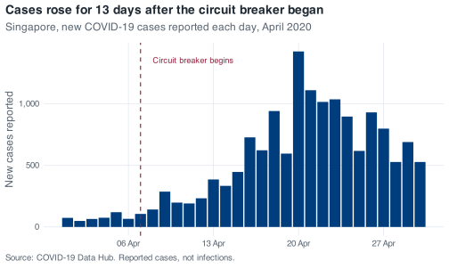
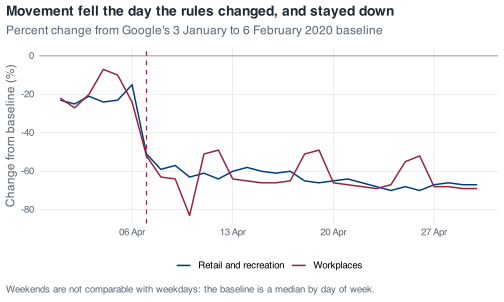

covid <- read_covid() %>%
arrange(date) %>%
mutate(
daily_cases = confirmed - lag(confirmed, default = 0),
daily_deaths = deaths - lag(deaths, default = 0),
severity = case_when(
daily_cases < 100 ~ "Low",
daily_cases <= 300 ~ "Medium",
daily_cases > 300 ~ "High"
),
severity = factor(severity, levels = c("Low", "Medium", "High")),
month = floor_date(date, "month")
)12 A monthly situation report
Up to now, each chapter has posed a question with the shape of its answer already visible: filter these rows, group by that column, plot the result. Requests in practice are less specified. They arrive from someone who wants to know what happened, by a deadline, in a form they can put in front of a committee.
The request in this chapter is of that kind: pick a month of Singapore’s 2020 and write the report. April is worked through first, to set out what the finished report looks like, and August is left to you.
12.1 The brief
The report covers one month and occupies one page. That page carries a table that gives the reader the month in numbers, two figures that show something the table cannot, and three sentences of interpretation. The limit of three is deliberate, because choosing which three findings matter takes more work than writing several paragraphs of hedged description.
Assume the reader is a public health officer who knows Singapore and does not know R. They will not read your code. They will look at the figures first, the table second, and your sentences only if the figures made them curious.
12.2 What a good report contains
A good report has six elements, and every one of them is something you already know how to produce.
- The month is stated, and so is the denominator. How many days does the month have, and how many of them carry data? Every month in this file is complete, but state that rather than leaving the reader to assume it.
- A count and a shape. A total tells you the size of the month. A median, a maximum and the date of the maximum tell you whether that total accumulated steadily or came from a small number of large days. Report both.
- A table at a unit the reader can take in. Days are too fine for a monthly table, and the month itself is too coarse; weeks are the workable grain.
- Two figures that answer different questions. Two views of the case curve is one figure drawn twice. Pair the epidemic curve with something else in the file: mobility, the stringency index, the severity mix.
- Every figure has a title that states a finding. “Daily cases, April 2020” only labels the figure, whereas “Cases rose for 13 days after the circuit breaker began” states a finding. A title that makes a claim has to be checked against the data before it can stand.
- At least one caveat that comes from looking at the data, not from a template. “Data may be incomplete” could be written without opening the file. “The 5 August count is four times the next highest August day and needs an explanation before it goes in a mean” could only come from the data.
12.3 April 2020, worked
12.3.1 A script that stands on its own
The report script has to run from the top in a fresh R session, with nothing carried over from earlier work: the file is read, the columns are built, and only then are they used. Everything the script needs is inside the script. The chunk below is the pipeline from the conditionals chapter, written out once in full so that no part of the report depends on state you cannot see.
Restart R and run the script from the top; whatever it still needs belongs in the script.
If you are writing this in a script of your own rather than inside the book’s project, swap read_covid() for read_csv(here("data", "sg_covid_data.csv")). That helper exists so that the chapters do not repeat a file path in every chunk, and nothing else in the pipeline depends on it.
Then pick the month once, at the top, in a named object. When you move to August you change one line rather than hunting for "2020-04" scattered through twenty chunks.
The result is thirty rows for a thirty-day month. The check is one line, and it catches a mis-specified filter before anything is computed from it.
12.3.2 The headline numbers
Predict before you run this
April 2020 has one day far larger than the rest. Write down the date you think it fell on before you read the next output. The circuit breaker started on 7 April, which makes the first week the intuitive guess: restrictions came in and conditions improved from there.
april %>%
summarise(
days = n(),
cases = sum(daily_cases),
mean_daily = mean(daily_cases),
median_daily = median(daily_cases),
peak = max(daily_cases),
peak_date = date[which.max(daily_cases)],
deaths = sum(daily_deaths)
)
#> # A tibble: 1 × 7
#> days cases mean_daily median_daily peak peak_date deaths
#> <int> <dbl> <dbl> <dbl> <dbl> <date> <dbl>
#> 1 30 15243 508. 488. 1426 2020-04-20 12The peak is 20 April, thirteen days after the circuit breaker began. Reported cases continued to rise for two weeks after Singapore closed workplaces and required people to stay at home.
That is not a paradox, and the reason matters. Reported cases are the output of a testing programme, not a direct measurement of infection. Through April, testing in the migrant-worker dormitories was expanding fast, and the dormitory outbreak dominated the national count from April to August. A rising reported curve during that period is partly transmission and partly the swab rate catching up with infections that had already happened. The two cannot be separated from this file, and the report should say so.
Note two details of that output. median_daily prints as 488. with a trailing full stop, which is the tibble telling you the value is not a whole number: it is 487.5, the average of the two middle days. The deaths total is 12 here, which is reliable for April because the deaths column has no missing values from 21 March onwards. Earlier in the year it does, with 59 leading NAs, and lag-differencing across them recovers only 27 of the year’s 29 deaths. If your chosen month is January, February or March, state that in the report.
april %>%
count(severity)
#> # A tibble: 3 × 2
#> severity n
#> <fct> <int>
#> 1 Low 5
#> 2 Medium 7
#> 3 High 18Eighteen of April’s thirty days were over 300 cases. Across the whole year only 77 days were, so April holds nearly a quarter of the year’s highest-count days in a single month.
12.3.3 The table
Weeks are the right grain for a monthly table. floor_date(date, "week", week_start = 1) puts each date on its Monday. The week_start argument is set explicitly because lubridate’s default is Sunday, so without it every week in the table would run from Sunday to Saturday. Stating it makes the assumption visible at the cost of one argument.
april_weeks <- april %>%
mutate(week = floor_date(date, "week", week_start = 1)) %>%
group_by(week) %>%
summarise(
days = n(),
cases = sum(daily_cases),
mean_daily = round(mean(daily_cases)),
peak = max(daily_cases),
retail = round(mean(retail_and_recreation_percent_change_from_baseline)),
stringency = round(mean(stringency_index), 1)
)
april_weeks
#> # A tibble: 5 × 7
#> week days cases mean_daily peak retail stringency
#> <date> <int> <dbl> <dbl> <dbl> <dbl> <dbl>
#> 1 2020-03-30 5 383 77 120 -23 41.7
#> 2 2020-04-06 7 1223 175 287 -53 71
#> 3 2020-04-13 7 4056 579 942 -61 76.8
#> 4 2020-04-20 7 7036 1005 1426 -67 77.6
#> 5 2020-04-27 4 2545 636 799 -67 76.8Look at the days column before you look at anything else. The first row covers five days, not seven, because April 2020 started on a Wednesday and the week beginning 30 March mostly belongs to March. The last row covers four. Any comparison of cases across those rows is comparing different amounts of time, which is why mean_daily is in the table and why days is in it too. Leave days out and a reader will read 383 against 1,223 as a threefold rise when part of the difference is two extra days.
The rest of the table tells a fairly clean story. Weekly totals climb from 383 to 7,036 and then fall back. Mean retail mobility drops from 23% below baseline in the first partial week to 67% below in each of the last two. Mean stringency goes from 41.7 to 71 in one step and sits in the seventies for the rest of the month.
12.3.4 The first figure: the epidemic curve
cb_start <- as.Date("2020-04-07")
ggplot(april, aes(date, daily_cases)) +
# Bars: one column per day of reported cases
geom_col(fill = nus_colours[["blue"]]) +
# Circuit-breaker marker and its text label
geom_vline(xintercept = cb_start, colour = nus_colours[["crimson"]],
linetype = "dashed") +
annotate("text", x = cb_start + 1, y = 1350, hjust = 0, size = 3.2,
colour = nus_colours[["crimson"]], label = "Circuit breaker begins") +
# Axis formatting: weekly date breaks, comma-formatted counts
scale_x_date(date_breaks = "1 week", date_labels = "%d %b") +
scale_y_continuous(labels = label_comma()) +
# Text: title states the finding; caption carries the source and the caveat
labs(
title = "Cases rose for 13 days after the circuit breaker began",
subtitle = "Singapore, new COVID-19 cases reported each day, April 2020",
x = NULL, y = "New cases reported",
caption = "Source: COVID-19 Data Hub. Reported cases, not infections."
)
The figure uses columns rather than a line, because these are counts of things that happened on discrete days, and a line would imply that a value could be read halfway between two dates. The dashed rule and the label do the work that a paragraph of text would otherwise have to do. The caption carries the source and the one warning the reader most needs.
The date breaks are weekly and the labels are "%d %b", so the axis reads 06 Apr, 13 Apr, 20 Apr. Left to itself ggplot2 would have chosen something reasonable but not necessarily aligned with the weeks in your table, and a reader who is trying to match figure to table will notice.
12.3.5 The second figure: mobility
The case curve records what was reported. The mobility columns record where people went, which is a different question and the reason this file supports more than a case series on its own.
Two series on one set of axes means one row per series per date, so the two columns have to become one column of values plus one column of labels. pivot_longer() does that. It is from tidyr, which came in with the tidyverse, and it is the only function in this chapter you have not already met.
april_mobility <- april %>%
select(
date,
`Retail and recreation` = retail_and_recreation_percent_change_from_baseline,
Workplaces = workplaces_percent_change_from_baseline
) %>%
pivot_longer(-date, names_to = "series", values_to = "change")
april_mobility
#> # A tibble: 60 × 3
#> date series change
#> <date> <chr> <dbl>
#> 1 2020-04-01 Retail and recreation -23
#> 2 2020-04-01 Workplaces -22
#> 3 2020-04-02 Retail and recreation -25
#> 4 2020-04-02 Workplaces -27
#> 5 2020-04-03 Retail and recreation -21
#> 6 2020-04-03 Workplaces -20
#> 7 2020-04-04 Retail and recreation -24
#> 8 2020-04-04 Workplaces -7
#> 9 2020-04-05 Retail and recreation -23
#> 10 2020-04-05 Workplaces -10
#> # ℹ 50 more rowsRenaming inside select() is what gets you a readable legend without a second call. Backticks are needed around Retail and recreation because it contains spaces; R will accept a name like that as long as you quote it that way, and here it should be done, because that string goes straight onto the plot.
ggplot(april_mobility, aes(date, change, colour = series)) +
# Reference line at zero, then one line per mobility series
geom_hline(yintercept = 0, colour = nus_colours[["muted"]], linewidth = 0.3) +
geom_line() +
# Circuit-breaker marker
geom_vline(xintercept = cb_start, colour = nus_colours[["crimson"]],
linetype = "dashed") +
# Axis formatting: weekly date breaks
scale_x_date(date_breaks = "1 week", date_labels = "%d %b") +
# Text: title states the finding; caption warns about the day-of-week baseline
labs(
title = "Movement fell the day the rules changed, and stayed down",
subtitle = "Percent change from Google's 3 January to 6 February 2020 baseline",
x = NULL, y = "Change from baseline (%)", colour = NULL,
caption = "Weekends are not comparable with weekdays: the baseline is a median by day of week."
)
The step at 7 April is what the figure is for. Retail goes from 15% below baseline on 6 April to 51% below on 7 April; workplaces go from 24% below to 52% below on the same day. Behaviour changed within a day, while the case curve took a fortnight to turn.
Two features of that figure are not what they appear to be. The deep spike down to 83% below baseline is 10 April, which was Good Friday, a public holiday. The eight deepest workplace-mobility days in the entire year are all public holidays, so any dip you see in this series should be checked against a calendar before it is called a policy effect.
The regular bumps upwards are weekends, and they run the opposite way to intuition. Google’s baseline is a median computed separately for each day of the week, so a Sunday is compared with pre-pandemic Sundays. Workplace activity on a normal Sunday was already low, which leaves less room to fall.
april %>%
filter(date >= cb_start) %>%
mutate(weekday = wday(date, label = TRUE)) %>%
group_by(weekday) %>%
summarise(
days = n(),
workplaces = mean(workplaces_percent_change_from_baseline)
)
#> # A tibble: 7 × 3
#> weekday days workplaces
#> <ord> <int> <dbl>
#> 1 Sun 3 -50
#> 2 Mon 3 -66
#> 3 Tue 4 -63
#> 4 Wed 4 -66.5
#> 5 Thu 4 -67
#> 6 Fri 3 -71.7
#> 7 Sat 3 -52.3Weekdays sit between 63 and 72 points below baseline. Saturday and Sunday sit around 50. Workplace activity did not return at the weekend; the baseline it is compared against is lower.
If you want the two figures stacked as a single image for a one-page PDF, patchwork will do it with p_cases / p_mobility once you have assigned each plot to a name. They are kept separate here so that each keeps its full height on screen.
12.3.6 The three sentences
April carried 15,243 reported cases, 26% of Singapore’s 2020 total, with 18 of its 30 days above 300 cases and 12 deaths; only May, at 18,715, was heavier.
Reported cases kept climbing for 13 days after the circuit breaker took effect on 7 April, peaking at 1,426 on 20 April, a pattern that reflects the pace of testing in the migrant-worker dormitories as much as the timing of infection.
Movement changed the day the rules did, with retail activity falling from 15% below baseline on 6 April to 51% below on 7 April and staying within a few points of its floor for the rest of the month, so the behavioural response was immediate even though the case curve was not.
The three sentences do three different jobs. The first sizes the month against the year. The second addresses the point a reader would otherwise misread. The third brings in the second data source and sets the behavioural response against the case curve.
Two things are absent from these sentences. There is no recommendation, because nothing in this file supports one, and no claim that the circuit breaker did or did not work, because a single month of a single country with no counterfactual cannot establish either. The purpose of a situation report is description rather than causal inference.
12.4 What this analysis does not tell you
Write a version of this section for your own month, and make it specific to that month.
Raw counts ignore population. Fifteen thousand cases is a number of people, not a rate. To turn it into a rate you need a denominator, and the appropriate denominator here is not obvious. Roughly 323,000 work-permit holders lived in dormitories of all types in 2020, of whom about 200,000 were in the 43 purpose-built dormitories. A case rate computed over the national population and a case rate computed over the dormitory-resident population are different quantities, and in April 2020 they were not close. This file gives you neither denominator.
Raw counts ignore testing volume. A reported case requires a test, a positive result and a report. Change the number of tests and the case count changes without a single extra infection. There is no test-count column in this file, so you cannot compute test positivity, which is the standard way of asking whether a rise in cases reflects a rise in transmission or a rise in testing. A rising curve supports the statement that reported cases rose. It does not support the statement that infections rose.
One national count is averaging two epidemics. From April to August 2020 the dormitory outbreak dominated Singapore’s case counts, and it had different dynamics from transmission in the wider community: different living density, different age structure, different testing regime, different intervention. MOH’s own daily updates reported those streams separately at the time. This file carries a single national total, so every mean you compute over those months is a weighted average of two processes, with weights you cannot see and that change from week to week. That is a limitation of the file, not of the epidemiology, and you should say which one you are reporting.
5 August 2020 is the clearest example. That day records 908 cases, against an August median of 91 and a next-highest August day of 313. Nine hundred and three of those 908 were dormitory residents, and 581 were linked to a single cluster at Acacia Lodge. MOH attributed the day’s numbers to clearance testing in dormitories picking up past infections. A mean that includes that day without comment describes a change in reporting as though it were a change in incidence.
One further point is flagged here as my own reading rather than something you can verify from the data. Google’s mobility series are built from location history on the phones of users who have that setting switched on, and Google does not publish these series broken down by nationality or work-permit status. Whether the movement of people confined to dormitories under quarantine appears in these curves at all is not a question this file can answer. I would not rely on the mobility series to describe what happened inside the dormitories in April. R will compute a mean of any column it is given; whether the column supports the question is a separate judgement.
12.5 Your turn
Exercise 12.1 (Write the August 2020 situation report) Produce the one-page report for August 2020: a table, two figures, three sentences of interpretation, and a short note on what your analysis does not tell you.
August is a harder month than April, even though the code is identical. What makes it harder is that the month contains a decision April does not, and the report has to address that decision explicitly.
You are done when someone who has never seen the data could read your page and come away with a correct impression of what August 2020 was like.
Stuck? Open for a hint (not the answer)
Compute the maximum, the median and the date of the maximum before you compute anything else, and put those three numbers next to each other. If a single day is several times the next highest day, the mean is describing that day rather than the month, and your report has to state explicitly what it does about that.
If you want a second month after that, September 2020 is the quiet counterpart: 30 days, every one of them under 100 cases, a mean of 31.8. Reporting on a month in which little changed is a separate skill, and one that is required regularly.